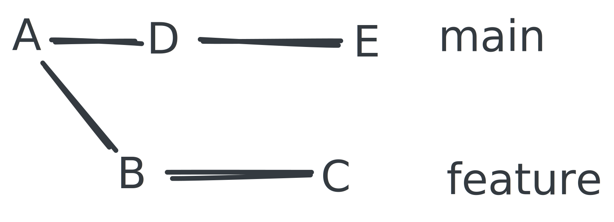
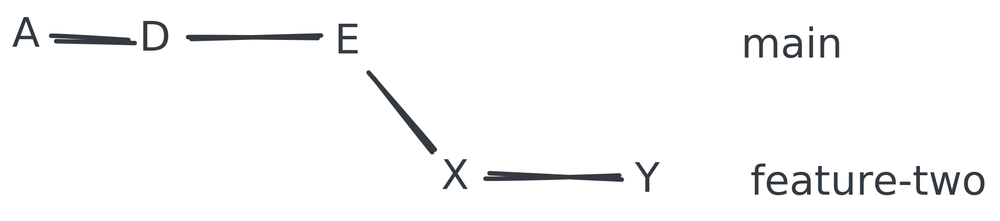
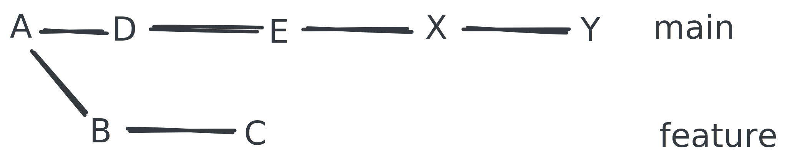
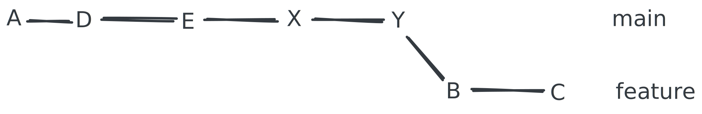

Merging changes
What we have done so far is to create a new feature branch based on main, switch to the featurebranch, make some new changes and commit them.
Now we want to switch back to the main branch and add some new changes there.
Exercise: Switch to the main branch and make some changes
- Switch to the
mainbranch.- Add
DandEto theREADME.mdfile the same way as we just addedBandCto thedocument.mdfile.
Command reminder:
git switch <branch-name> # to switch to a branch
git status # to see the status of the working directory
git add <file-name> # to add a file to the staging area
git commit -m "<message>" # to commit the changes
Solution: Switch to the main branch and make some changes
git switch main
echo "D" >> README.md
git add README.md
git commit -m "D"
echo "E" >> README.md
git add README.md
git commit -m "E"
If we run git log we should see something like this:
commit 1fef21501625d1cb1ab99318ad0fa8487d6ef5cb (HEAD -> main)
Author: Lasse Lund Sten Jensen <lajl@itu.dk>
Date: Fri Sep 20 22:27:19 2024 +0200
E
commit 8ae69da5d2938a5fee06207f2c3320a4c5b90a9b
Author: Lasse Lund Sten Jensen <lajl@itu.dk>
Date: Fri Sep 20 22:27:06 2024 +0200
D
commit 16b8f7f933c4c92b83ebb8602109c84c2d799359
Author: Lasse Lund Sten Jensen <lajl@itu.dk>
Date: Fri Sep 20 21:48:09 2024 +0200
A
We can see that D, E, and A are all on the main branch.
The branches now look like this:

This means the branches have diverged.
They have commits that are unique in both and they have a common ancestor A.
Git merge
When we have two branches that have diverged, we can merge them back together.
When merging we can have two different outcomes—one with a merge commit and one without. Strategy for merging matters here.
What is a merge exactly?
A merge is a way to combine the changes from one branch into another branch. Essentially combining two histories together that have diverged somewhere in the past.
As in our example, where main and feature have diverged from a shared commit A. Here A is the first common ancestor. This is also called the merge base.
When we merge, git
- walks the history of the two branches,
- finds the merge base,
- checks out the merge base
- and "plays" those commits on top of it,
- and then creates a new commit with the changes from both branches called the merge commit.
A merge commit has two parents. One from the branch we are merging from and one from the branch we are merging to.
Merge
We have the merge command.
The branch we are on (i.e. has checked out, with the *) is the branch we are merging into, also called the target branch. The branch in <branch-name> will be the source branch.
Command
git merge <branch-name>
Read more about it in the manual:
man git-merge
To merge the feature branch into the main branch, we can use the merge command.
However, since we will be using this to demonstrate another merge technique, let us first checkout a copy of the main branch, so we do not mess up our history.
We call it main-merge-feature.
git checkout -b main-merge-feature
Exercise: Merge the feature branch into the main-merge-feature branch using the merge command
- Switch to the
main-merge-featurebranch, if you are not already on it.- Merge the
featurebranch into themain-merge-featurebranch.- Check the log to see the result.
- (Extra) Use the
--parentsflag to see the parents of the merge commit.
Command reminder:
git switch <branch-name> # to switch to a branch
git merge <branch-name> # to merge a branch into the current branch
git log # to see the logs
Solution: Merge the feature branch into the main-merge-feature branch using the merge command
git switch main-merge-feature # switch to the target branch
git merge feature # merge source branch into the target branch
We will be presented with this message.
Output:
Merge branch 'feature' into main-merge-feature
# Please enter a commit message to explain why this merge is necessary,
# especially if it merges an updated upstream into a topic branch.
#
# Lines starting with '#' will be ignored, and an empty message aborts
# the commit.
This is the default message when merging. We can just save and close the editor by typing :wq and pressing Enter.
Note:
:wqis the command (:) to write (w) and quit (q) in vim—usually the default editor in git.
We should see something like this.
Output:
Merge made by the 'ort' strategy.
document.md | 2 ++
1 file changed, 2 insertions(+)
create mode 100644 document.md
Next, we can check the log to see the result.
git log --oneline --graph --all
Output:
* 8d3108b (HEAD -> main-merge-feature) Merge branch 'feature' into main-merge-feature
|\
| * 312c2e9 (feature) C
| * a582ce0 B
* | 1fef215 (main) E
* | 8ae69da D
|/
* 16b8f7f A
We can see that the main-merge-feature branch now has the commits from both main and feature. The branches have been merged together.
Extra: Using the --parents flag
Taking a look at the log with the --parents flag, we can see the parents of all the commits.
git log --oneline --graph --all --parents
Output:
* 8d3108b 1fef215 312c2e9 (HEAD -> main-merge-feature) Merge branch 'feature' into main-merge-feature
|\
| * 312c2e9 a582ce0 (feature) C
| * a582ce0 16b8f7f B
* | 1fef215 8ae69da (main) E
* | 8ae69da 16b8f7f D
|/
* 16b8f7f A
Fast forward merges
When we have a branch that has diverged from another branch, but the branch we are merging into has not changed since the divergence, we can do a fast forward merge.
Exercise: Merging a branch into another branch using a fast forward merge
- Switch to the
mainbranch.- Create a new branch
feature-twoand switch to it.- Create a new document
document-two.md.- Add values
XandYto thedocument-two.md.- Add two commits with messages
XandY.- Merge the
feature-twobranch into themainbranch.
The branch structure should look like this.

Solution: Merging a branch into another branch using a fast forward merge
git switch main # switch to the main branch
git checkout -b feature-two # create and switch to the feature-two branch
# add X change
echo "X" >> document-two.md
git add document-two.md
git commit -m "X"
# add Y change
echo "Y" >> document-two.md
git add document-two.md
git commit -m "Y"
git switch main # switch back to the main branch
git merge feature-two # merge the feature-two branch into the main branch
Output:
Updating 1fef215..562f958
Fast-forward
document-two.md | 2 ++
1 file changed, 2 insertions(+)
create mode 100644 document-two.md
Observation
The fast-forward merge happened because the common ancestor of the main and feature-two branches was the tip of the main branch itself.
Cleanup
If you followed the exercises up unti now, you can delete the
merge-feature-twoand thefeature-twobranches.Use
git branch -d <branch-name>to delete a branch.
Git rebase
Assume we look at the git history and we have the following branches: main and feature.
They should look like this.

By rebasing, we can make the history look like this.

Rebasing is the act of taking the changes from one branch and apply them on top of another branch. Or to the tip, really.
Essentially "rewriting" git history.
This can be useful if we want to keep a clean history, without merge commits. It allows us to apply our changes on top of the latest "reality".
How rebase works
Basically, when rebasing this is the flow.
- Execute
git rebase <target-branch>. The branch you are on when running the command is the branch you are rebasing—we call it<current-branch>. - The
<target-branch>is checked out. - The commits from
<current-branch>are "played" one commit at a time. - When done, the
<current-branch>is updated to the latest commit SHA of<target-branch>which now has all the changes from<target-branch>as the base.
Important
It will lead to complications at some point if you do not understand this flow and what goes on.
Exercise: Rebase the feature branch with the main branch
In order to not mess up the history for other exercises, we will create a new branch feature-rebase-main and rebase that branch with the main branch.
Do this first.
git checkout feature
git checkout -b feature-rebase-main
- Switch to the
feature-rebase-mainbranch.- Rebase the
feature-rebase-mainbranch with themainbranch.- Check the logs to see the result.
Command reminder:
git rebase <target-branch> # to rebase a branch with the current branch
git log # to see the logs
Solution: Rebase the feature branch with the main branch
git checkout feature-rebase-main # switch to the current branch
git rebase main # rebase the current branch with the target branch
Check the logs to see the result.
git log --oneline --graph --parents
Output:
* 109ad4e b12a712 (HEAD -> feature-rebase-main) C
* b12a712 562f958 B
* 562f958 37fb152 (main) Y
* 37fb152 1fef215 X
* 1fef215 8ae69da E
* 8ae69da 16b8f7f D
* 16b8f7f A
Observation
Rebase rewrites the history of the current branch with the missing commits from the target branch. When this is done, rebase actually creates new commits with the same changes, which is why you will see different commit SHAs.
Read more about merging vs. rebasing. Especially the section "The golden rule of rebasing":
Pros
- Clean history, no merge commits.
Cons
- Alters history of a branch. Rewriting history can be dangerous.
- If a branch was already on the remote, we need to force push the changes. This can lead to complications if others are working on the same branch.
Warning
- Never rebase a branch that is shared with others.
- NEVER CHANGE HISTORY OF A PUBLIC BRANCH—Meaning, do not change the history of
mainor whatever branch you are using as the main branch. - You will end up with two branches with the same name, but with different histories, which will lead to merge conflicts and team frustations. The moment you do this, it breaks everybody.
Rule of thumb here
- Always merge on public branches.
- Only rebase on private branches.
There is a lot more to learn here, but for the scope of this course, this is enough.